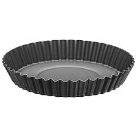

En esta página aprenderemos a realizar aquellos básicos de la pastelería para que puedas realizar desde tu casa con el mínimo de utensilios y en pocos minutos. Aprenderemos a realizar budines, tartas, pasta frola, cheescake y muchas preparaciones más. Alista tu espátula que ya comenzamos.
PASTA FROLA
Ingredientes
Para la Masa
Harina 300 grs. - Puede utilizar harina 000 o 0000, es indistinto.-
Polvo para Hornear 5 grs.
Manteca Pomada 180 grs.
Azucar común 100 grs.
Yemas 3 unidades.
Miel 1 cda. - Opcional-.
Ralladura de 1 limón.
Esencia de Vainilla cant. necesaria.
Dulce de Membrillo 500 grs. - Puede utilizar Batata o dulce de leche.-
Oporto 50 cc. - Si no es de su agrado puede omitirlo.-
Utensilios
Espátula - Puede ser de Madera o plástica.
Bowl - El que tenga a mano.
Medidor o Balanza para cocina.
Batidora Manual o Eléctrica - Es tan fácil que no está de mas ensuciarnos un poco las manos-.
Molde para tarta de 24 cm o aro. También puede hacerla directamente en la fuente del horno.
Palo de Amasar.
Papel Film o Bolsa tipo camiseta.
Cuchara o pisa papa.
Algunos Tips
Es importante que todos los ingredientes estén a temperatura ambiente. De lo contrario será dificil integrarlos y la masa no tomará la consistencia que se necesita.

Muchos me consultan que es mejor, la tartera o el aro. La realidad es que los dos son prácticos pero a la hora de desmoldar es mucho mas conveniente utilizar un aro. En caso de usar tartera, recomiendo las desmontables. Si dispone de un aro, regule el tamaño o si tiene un aro con la medida para esta receta muchísimo mejor, pero recuerde que deberá forrar la base con papel aluminio para que la masa no se adhiera a la placa.
Antes de iniciar, asegurese de tener todos los ingredientes pesados y dispuestos para no olvidar incorporarlos.
Procedimiento
Colocar en el bowl la manteca pomada, el azúcar, la ralladura de limón, la esencia de vainilla a gusto y la cucharada de miel - si es de su gusto-.
Con la espátula vamos a realizar el proceso de integrar los ingredientes hasta conseguir una consistencia tipo crema. Lo que se conoce como cremado. Nos vamos a dar cuenta ya que el azúcar se integra en la manteca y toma la consistencia de una pasta.
Incorporar las yemas de a uno. Si se complica con la espátula podemos utilizar el batidor manual o la batidora.
Agregar de a poco los ingredientes secos (harina y polvo para hornear). Puede tamizarlos si lo desea, pero no es necesario.
Mezclar hasta formar una masa. Si se le complica puede utilizar sus manos, la masa va a estar lista cuando deje de pegarse en sus manos o en la mesada.
Cuando la masa esté lista tenemos dos opciones. La primera es envolverla en papel film o bolsa y reservarla en la heladera unos 20 minutos, para luego estirarla con el palo de amasar. O bien, estirarla sobre papel film o bolsa del diámetro que permita cubrir el molde y un poco mas para las tiras (calcule 1/4 de masa) y luego llevarla a la heladera para que descanse. Dato importante:Si va a utilizar aro, los bordes no deben superar los 2 dedos de altura.
Con la cuchara o el pisa papa haga un puré con el dulce de membrillo y el oporto - opcional - y reserve.
Retire de la heladera la masa y coloquela en el molde previamente enmantecado y enharinado - puede usar fritolin o aceite en reemplazo de la manteca-.
Coloque el puré de batata sobre la masa.
Con la masa que le sobro realice las tiras y coloquelas de sobre la preparación de manera entrecruzada. A modo de ejemplo puede colocar tiras en forma vertical y otras tirar en forma horizontal para obtener los rombos.
Una vez listo, en un horno precalentado a 170°/180° - un poco mas de la mitad si no posee marcador de temperatura- por unos 30 o 40 minutos o hasta que la masa esté dorada y apenas se haya despegado de los bordes.
Ahora si ¡ A COMER ! Espero que la realicen y esperen por más recetas.
¿Tuviste alguna duda o necesitas algun consejo?
Dejame tus datos y con gusto me pondré en contacto: